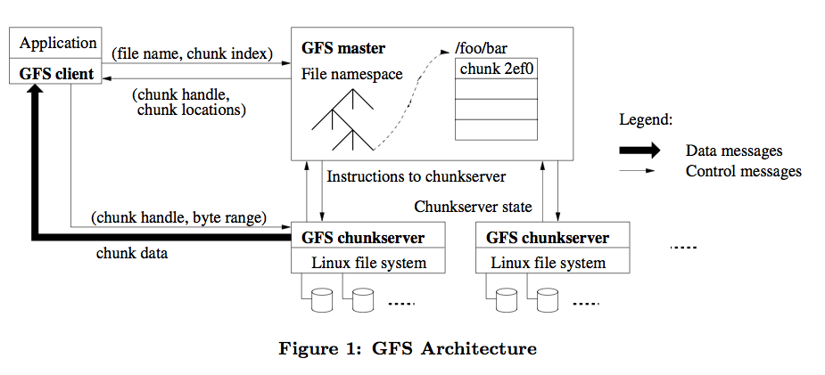

map(fn1, list) -> listreduce(fn2, init, list) -> scalarfn1 to each record in chunk
fn2
map(String key, String value):
for each word w in value:
EmitIntermediate(w, "1")
reduce(String key, Iterator values):
int result = 0
for each v in values:
result += ParseInt(v)
Emit(AsString(result))
grep-style jobsproto "querylog.proto" queries_per_degree: table sum[lat: int][lon: int] of int; log_record: QueryLogProto = input; loc: Location = locationinfo(log_record.ip); emit queries_per_degree[int(loc.lat)][int(loc.lon)] <- 1;
anchor:phillylinux.orgrow:column:timestamp